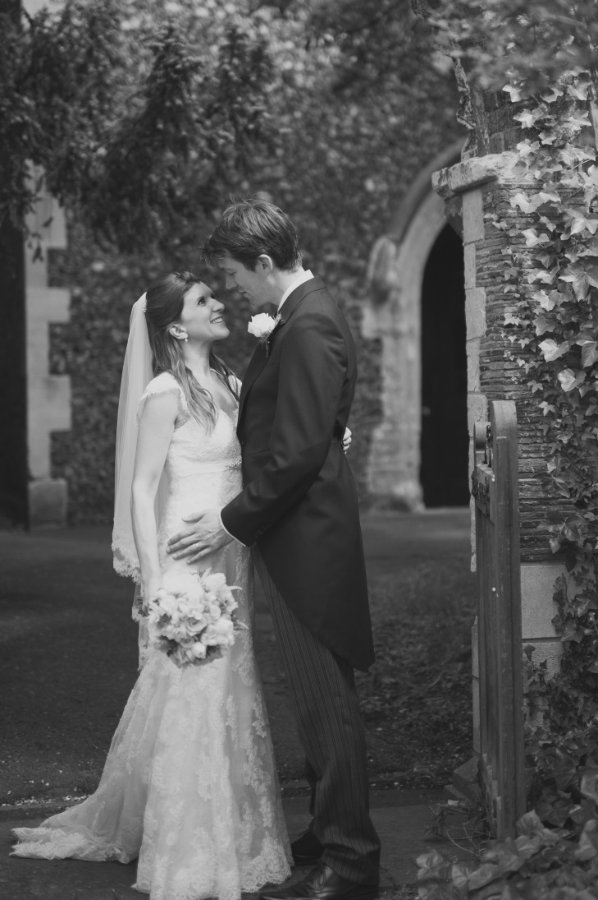

Welcome to Sophie Townsend Flowers. Whatever your floral vision for your wedding day, Sophie can help you make it happen. From bouquets to buttonholes, corsages to cake flowers, pew ends to large arrangements and everything in between Sophie is friendly, professional and happy to help whatever your budget.
Weddings See if these featured weddings give you any ideas for your big day.
Lanny and Adam had a sophisticated city wedding in Central London with the ceremony at St Brides and the reception at The Hawksmoor.

Anna and Paul had a spectacular hill top wedding in a beautiful finca overlooking the sun-drenched Costa del Sol.

Charlotte and Louis got married at The Royal Ballet School in Richmond Park, London.
Flowers Have a look at the galleries for examples of Sophie's work.


Contact Contact Sophie directly to discuss your requirements or follow her on social media for more fabulous wedding flowers.
+44 7561 531390
sophie@sophietownsend.com
17 Portman Crescent, Bournemouth BH5 2ER